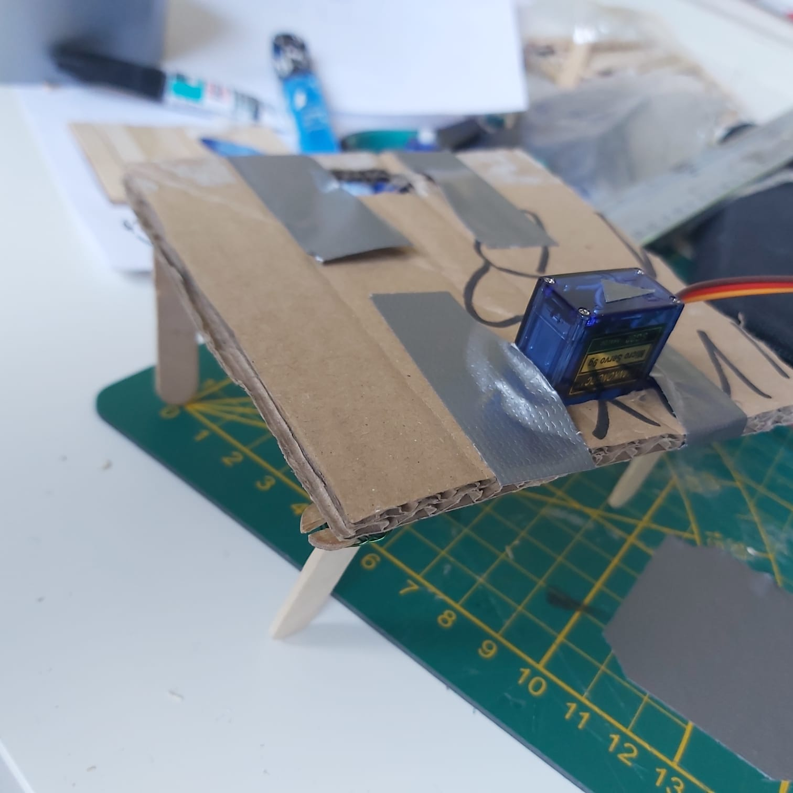

WEEK 1
Dag 1
Op de eerste dag hadden we eerst een online kick-off. Direct na de Kick-off zijn we begonnen met het maken van een leuk concept voor Artificial Creature. Om samen te brainstormen, besloten we al onze ideeën voor ons concept op miroboard te zetten.
Voor de kick-off hadden we al wat onderzoek gedaan over Artificial Creature. Na het toevoegen van onze ideeën en onderzoek zijn we samen gaan na denken wat voor impact corona heeft gehad op mensen. Veel mensen waren alleen thuis en hadden helemaal geen gezelschap. Hierdoor voelden de meeste mensen zich eenzaam.
Met het idee dat een kleine glimlach wonderen kan doen, hebben we besloten om een robot te maken die emoties laat zien.
Onze robot toont verschillende emoties op zijn gezicht. Voor elke emotie maken zijn benen kleine bewegingen. De emoties komen met afstand naar boven. Hoe dichter je bij de robot bent, hoe gelukkiger hij wordt.
Bijvoorbeeld:
- • SLAAP: op een afstand van 1 meter slaapt de robot [ Kruisje ]
- • WAKKER WORDEN: als je 90 cm van hem af bent gaan zijn ogen open [ * _ * ]
- • BOOS: op 50 cm afstand wordt hij boos als je niet dichtbij hem komt [ > _ < ]
- • HAPPY: op 20 cm afstand ziet hij er vrolijk uit en blijft springen van vreugde [Hartje ]
Het algemene doel van de robot is dat de emoties en de reactie die hij toont een persoon een beetje gelukkiger maakt.
Na het vaststellen van het concept hebben we snel een paat schetsen gemaakt.

Dag 2
Op de eerste dag hadden we vastgesteld wat voor sensoren we allemaal we nodig hadden. Op de tweede dag besloten we hiermee verder te werken. Met een klein onderzoek samen zijn we erachter gekomen hoe we de LED matrix en Ultrasonische Sensor met elkaar konden verbinden. Als je dichter bij de ultrasonische sensor kwam veranderde de lichten in de LED matrix.
Toen de code eenmaal was afgerond, besloten we onze schetsen uit te werken. In onze schetsen hadden we twee concepten bedacht, bij beide concepten was alleen het uiterlijk anders. We hadden Frank en Kees geschetst en besloten deze twee te realiseren om te zien hoe het er in het echt uit zou zien.
Van de twee concepten vonden we dat Frank er het leukste uitzag. Maar nadat de keuze gemaakt was, besloot ik voor de lol een mond onder de sensor te tekenen. Dit gaf de robot een iets vriendelijker uiterlijk. Vervolgens voegde ik wimpers toe en zo veranderde Frank ineens in Katja.
Omdat Katja een mond had, zou het niet handig zijn om de LED-matrix als mond te gebruiken. Dus hebben we besloten om het te veranderen in een X en een Hart. Als er niemand in de buurt is van Katja schijnt er een X op haar borst maar op het moment dat iemand dichtbij haar is komt er een hart te voorschijn.
.jpeg)
Dag 3
Op de derde dag was het de bedoeling dat we aan Katja's voeten en benen zouden werken. Het idee was dat als iemand naar Katja toeloopt of bij Katja is, er een hartje te voor verschijn komt en ze begint te dansen van blijdschap.
Om Katja te laten dansen, moesten we uitzoeken hoe we haar voeten konden maken. Samen zochten we naar verschillende Arduino Robots en keken hoe de opbouw.
In het begin waren we volop aan het experimenteren hoe we Katja in beweging konden krijgen. Vervolgens vonden we een robot genaamd Otto. Zijn uiterlijk leek sprekend op onze Katja en de voeten van Otto paste precies bij onze schetsen.

Door Otto verder te onderzoeken konden we hem vanuit verschillende hoeken bekijken. Dit heeft ons geholpen met de lay-out van Katja dat we in InDesign hebben gemaakt. Nu we wisten hoe de voeten eruit zouden zien, besloten we het heel snel in elkaar te zetten met dik papier.
.jpeg)
Dag 4
Op de vierde dag waren we van plan om de tekening op schaal uit te snijden met een snijplotter. Als materiaal hiervoor hebben we gekozen voor een dik karton zodat het het gewicht van de materialen die in de robot zitten kan dragen.
Vervolgens hebben we het in elkaar gezet en gecontroleerd of alles doet wat het moet doen. Wat ons opviel was dat het kruis op Katja's borst er onvriendelijk uitzag. We kwamen op het idee om dit aan te passen met een leeg hart. Als iemand dichter bij Katja komt, wordt deze gevuld.
Dag 5
Op de vijfde dag besloten we Katja een hartje te geven. Je begint haar hartslag te horen zodra er je bij haar bent. Als er niemand om haar heen is, hoor je de hartslag niet.
Wat ons stoorde aan Katja was de kabel boven haar hoofd. Dit zorgde ervoor dat ze niet goed funcioneerde. We zochten naar alternatieve oplossingen en kwamen op het idee om een batterij te gebruiken. Op internet zochten we naar wat voor soort batterijen er op een Arduino gebruikt kan worden. Ondertussen zijn we ook aan de slag gegaan met haar voeten en haar uiterlijk
WEEK 2
Dag 6
Op de zesde dag vonden we dat de kabels niet stevig aan onze Arduino waren bevestigd. Daarom besloten we een onderzoek te doen naar hoe we de grond- en 5v-kabels beter met elkaar konden verbinden. Op internet stonden er verschillende manier om dit te doen.
Met de materialen die we in huis hadden besloten we ze met een koperdraad aan elkaar te verbinden. Nadat alles goed begon te werken, gingen we een beetje met haar voeten spelen en slaagde erin om haar te laten dansen als er iemand bij haar was.
.jpeg)
Dag 7
Op de zevende dag hebben we gewerkt aan het uiterlijk van Katja. We gaven haar nog twee armen en besloten haar zilver te spuiten met een spuitbus om haar een echte robotlook te geven.
.jpeg)
.jpeg)
Dag 8
Op dag 8 kregen we de materialen voor de batterij van Katja binnen. We hebben nog ekstra een 9v-batterij gekocht om het echt te laten werken. Later bevestigden we de batterij-aansluitclip en een DC-connector aan Katja en zagen dat alles goed begon te weken.
Daarna hebben we aan haar uiterlijk gewerkt en haar een heel mooi kapsel gegeven. We hebben ook de code in haar bewegingen verbeterd.
.jpeg)
Dag 9
Voor dag negen hadden we een plekje gereserveerd in de Innovation Playground. we hadden de dag ervoor de buzzer op onze Arduino aangesloten, maar op de een of andere manier werkte onze Katja niet meer. We dachten dat er iets mis was met de kabels en hebben alles losgekoppeld. Toen we er helemaal niet uit kwamen, besloten we Chris om hulp te vragen. Hij vertelde ons dat er niets mis was met onze kabels. Het lag aan onze batterij die was op. Katja kreeg niet genoeg stroom kreeg.
.jpeg)
.jpeg)
Nu we wisten wat het probleem was, konden we aan de presentatie voor de Expo werken. We hebben foto's en video's gemaakt en Katja getest met willekeurige studenten en hun reactie vastgelegd. Vervolgens hebben we de afbeeldingen samengevoegd in Adobe Rush.
Dag 10
Dag tien was de dag van de Expo en de Eindpresentatie. In vergelijking met de jaren daarvoor was dit jaar alles digitaal. Voor de presentatie zijn verschillende groepen gemaakt. Elke groep zou 1 project uitkiezen om het nogmaals aan iedereen te presenteren.
Tijdens onze presentatie hebben we kort het proces van het maken van Katja uitgelegd en wat het eindproduct laten zien. Helaas zijn we niet gekozen om het nogmaals aan iedereen te presenteren. We hebben wel goede feedback gekregen en hebben het goed afgesloten.
Gedurende het hele proces van twee weken hebben Hosei en ik heel goed samengewerkt. We vulden elkaar goed aan en maakten uiteindelijk samen een geweldige Robot.